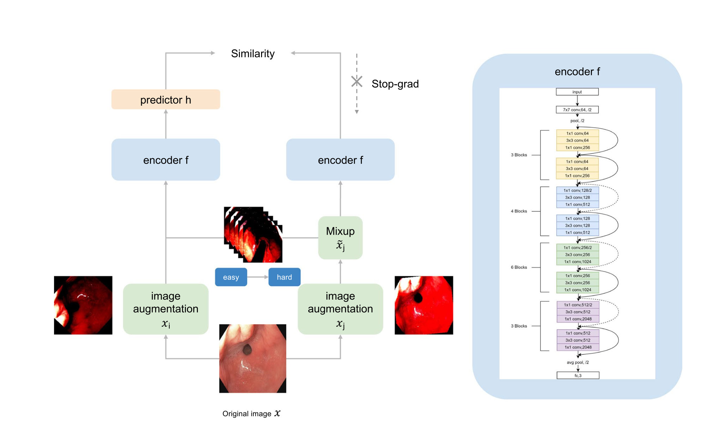

|
Sai Ashish Somayajula I am a fourth-year PhD student in the ECE department at University of California, San Diego advised by Professor Pengtao Xie. My work revolves around enhancing Large Language Models (LLMs) to make a significant impact in healthcare, especially in settings where resources are limited. By employing a Multi-Level Optimization (MLO) framework, I aim to tailor auxiliary models to meet specific user needs that benefit a downstream model. This includes generating improved data augmentations and learning task-dependent similarity matrices. Ultimately, my goal is to navigate through and address the unique challenges posed by low-resource environments in Natural Language Processing (NLP), ensuring that these powerful tools are accessible and effective in all scenarios. I obtained my Bachelor's degree in Electrical Engineering with a minor in Computer Science and Engineering from the Indian Institute of Technology, Hyderabad. I was fortunate to be advised by Professor Sumohana S. Channappayya and Professor Adity Siripuram. I secured the second-highest CGPA in the B.Tech program across all departments. Email / CV / Bio / Google Scholar / Linkedin / Github Master's students — shoot me an email if you want to discuss ideas or want mentorship, I would be happy to help! |

|
News
More
|
Professional Experience
|
Selected Publications |

|
Token-Specific Watermarking with Enhanced Detectability and Semantic Coherence for Large Language Models
Mingjia Huo*, Sai Ashish Somayajula*, Youwei Liang, Ruisi Zhang, Farinaz Koushanfar, Pengtao Xie International Conference on Machine Learning (ICML), 2024 pdf / code A multi-objective optimization based token-specific watermarking method to study and improve both watermark detectability and generation quality. |

|
Generalizable and Stable Finetuning of Pretrained Language Models on Low-Resource Texts
Sai Ashish Somayajula, Youwei Liang, Li Zhang, Abhishek Singh, Pengtao Xie Annual Conference of the North American Chapter of the Association for Computational Linguistics (NAACL), 2024 pdf / code A bi-level optimization-based approach to finetune an automatically chosen sub-network within pre-trained language models on low-resource datasets to mitigate overfitting and reduce standard deviation. |

|
AutoLoRA: Automatically Tuning Matrix Ranks in Low-Rank Adaptation Based on Meta Learning
Ruiyi Zhang, Rushi Qiang, Sai Ashish Somayajula, Pengtao Xie Annual Conference of the North American Chapter of the Association for Computational Linguistics (NAACL), 2024 pdf / code AutoLoRA, a meta-learning framework designed to automatically determine the optimal rank for each low-rank adaptation (LoRA) matrix while parameter efficient finetuning. |
|
|
Improving Long COVID-Related Text Classification: A Novel End-to-End Domain-Adaptive Paraphrasing Framework
Sai Ashish Somayajula, Onkar Litake, Youwei Liang, Ramtin Hosseini, Shamim Nemati, David O. Wilson, Robert N. Weinreb, Atul Malhotra, Pengtao Xie Scientific Reports. Nature Portfolio, 2024 Introduce medical paraphrasing to augment data, coupled with a feedback mechanism. This approach utilizes a data-reweighting-based multi-level optimization framework with a meta-weight-network to enhance the classification performance of long COVID literature. |
|

|
Improving image classification of gastrointestinal endoscopy using curriculum self-supervised learning
Han Guo, Sai Ashish Somayajula, Ramtin Hosseini, Pengtao Xie Scientific Reports. Nature Portfolio, 2024 A curriculum self-supervised learning framework to improve the diagnosis of gastrointestinal (GI) disorders using endoscopy images. |

|
Bi-level Finetuning with Task-dependent Similarity Structure for Low-resource Training
Sai Ashish Somayajula, Lifeng Jin, Linfeng Song, Haitao Mi, Dong Yu Findings of the Association for Computational Linguistics (ACL), 2023 pdf / code A bi-level optimization approach to synthesize gradients of unknown lexical information from known data, leveraging a task-dependent similarity matrix. |

|
A Multi-Level Optimization Framework for End-to-End Text Augmentation
Sai Ashish Somayajula, Linfeng Song, Pengtao Xie Transactions of the Association for Computational Linguistics (TACL), 2022 pdf / code / video A data reweighting based domain adaptive feedback mechanism for end-to-end learning of text augmentation and classification models, overcoming traditional data augmentation limitations. |
|
I dedicate the knowledge I gain for the betterment of this society. My gratitude to the higher power that guides me on the right path! |